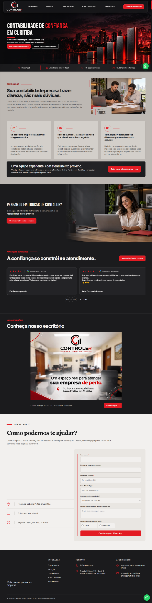
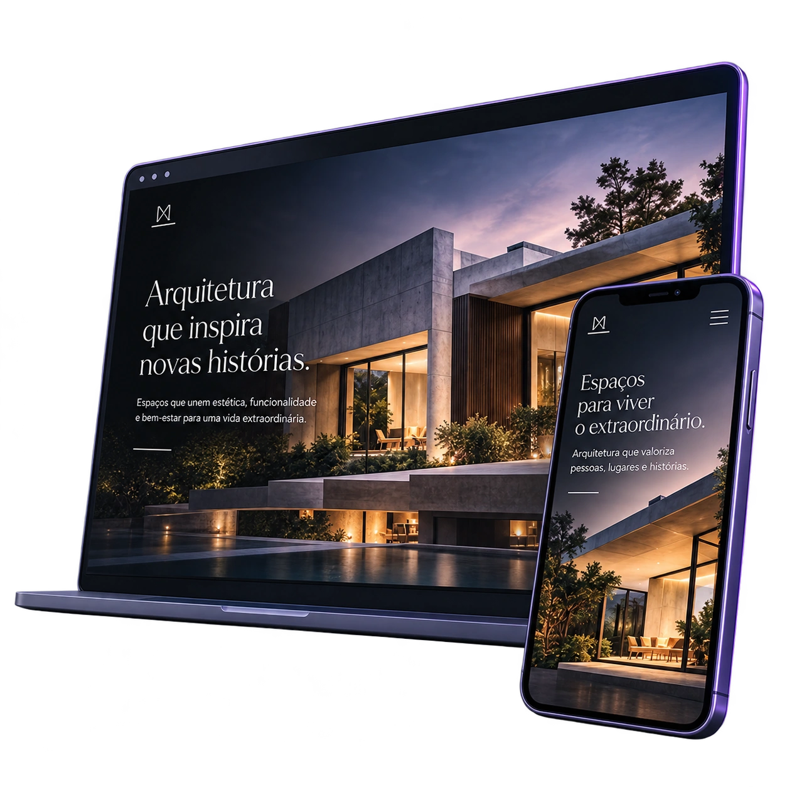
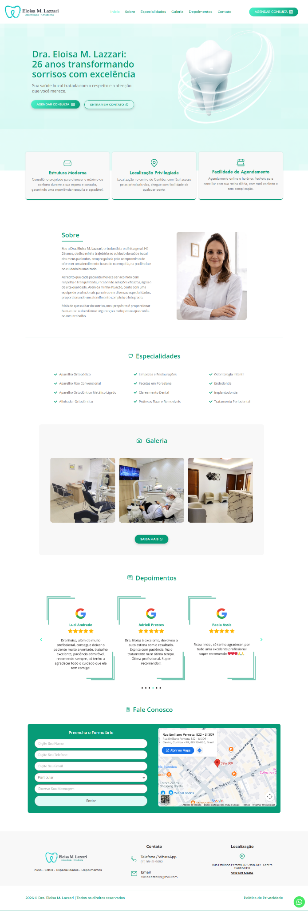
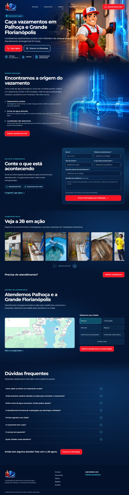
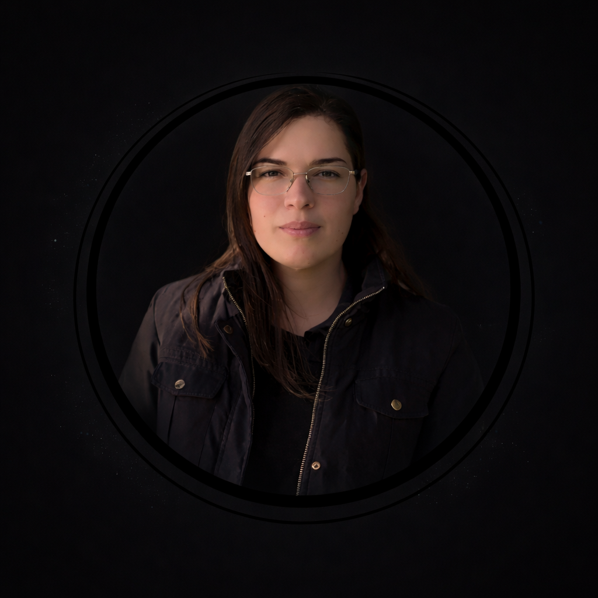
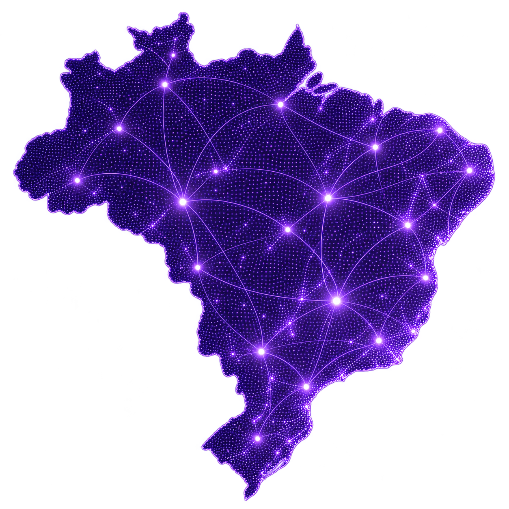

Controler Contabilidade
SITE INSTITUCIONAL
Clareza e credibilidade para apresentar serviços contábeis.
Ver projeto : Controler ContabilidadeWebdesign • Estratégia • Performance
Desenvolvo sites que combinam design, estratégia e performance para valorizar sua marca e conectar seu negócio a novos clientes.

PROJETOS EM DESTAQUE
Design, estratégia e identidade
em cada projeto.

SITE INSTITUCIONAL
Clareza e credibilidade para apresentar serviços contábeis.
Ver projeto : Controler Contabilidade
SITE INSTITUCIONAL
Uma presença acolhedora para conectar pacientes ao consultório.
Ver projeto : Dra. Eloisa M. Lazzari
SITE DE SERVIÇOS
Serviços em destaque e contato direto para solicitar atendimento.
Ver projeto : JB Caça VazamentosDESIGN COM ESTRATÉGIA
Um site precisa apresentar sua marca com clareza, transmitir confiança e facilitar o próximo passo do seu cliente.
Vamos falar sobre seu projetoUma apresentação criada para sua marca e para o público que você quer conquistar.
Navegação simples e conteúdo organizado no computador, tablet e celular.
Estrutura e conteúdo planejados para ajudar os mecanismos de busca a entender seu negócio.
Botões e chamadas bem posicionados para facilitar orçamentos, agendamentos e conversas.
COMO SEU PROJETO ACONTECE
Um processo claro, com você
acompanhando cada etapa.
Conversamos sobre seus objetivos, público e o que seu site precisa comunicar.
Apresento uma proposta de design para alinharmos o estilo antes do desenvolvimento.
Transformo o visual aprovado em páginas que funcionam no computador e no celular.
Conferimos conteúdo, navegação e formulários antes de colocar o site no ar.

SOBRE MIM
Sou webdesigner e desenvolvo sites que conectam a identidade de cada negócio às necessidades de seus clientes.
Meu trabalho une criatividade, organização e estratégia para transformar ideias em uma presença digital profissional, com atenção à experiência de quem navega e aos objetivos de quem contrata.
Vamos conversarATENDIMENTO EM TODO O BRASIL
Atendo empresas e profissionais de todo o Brasil de forma online, com comunicação direta e acompanhamento em cada etapa do projeto.

PRINCIPAIS DÚVIDAS
Confira as principais informações sobre a criação e os cuidados com seu site.
Ainda tem alguma dúvida?
Vamos conversarDe 3 a 5 dias úteis após o recebimento do briefing com as informações necessárias para desenvolver o projeto.
Os primeiros 12 meses de domínio e hospedagem são grátis. Após esse período, a renovação tem custo, informado antes da contratação.
Sim. Seu site será responsivo, com layout adaptado para computadores, tablets e celulares.
Sim! Atendo empresas e profissionais de qualquer nicho, adaptando o design e a comunicação ao público de cada negócio.
Landing pages, sites institucionais com várias páginas e sites com blog. Nos projetos com blog, estão incluídas 10 postagens gratuitas.
Sim. Se você anunciar no Google Ads, instalo e configuro a tag do Google para medir as ações definidas como conversão no site.
Sim. Com a manutenção mensal contratada, você pode solicitar alterações ilimitadas no site.
VAMOS CRIAR SEU SITE
Conte um pouco sobre o que você precisa e indique um horário para conversarmos online.
(41) 98467-8439